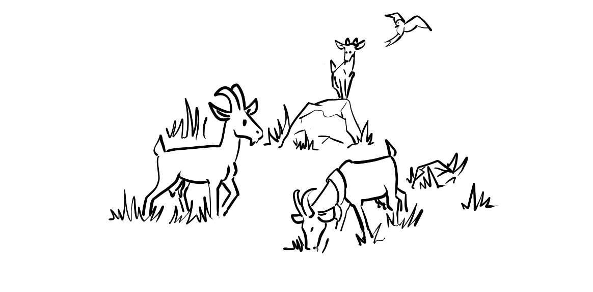
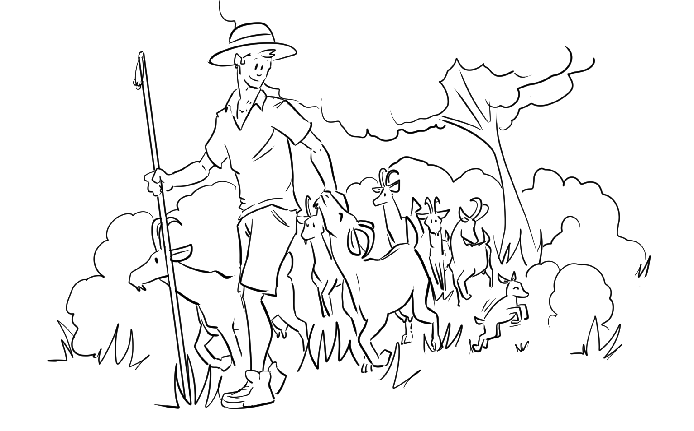
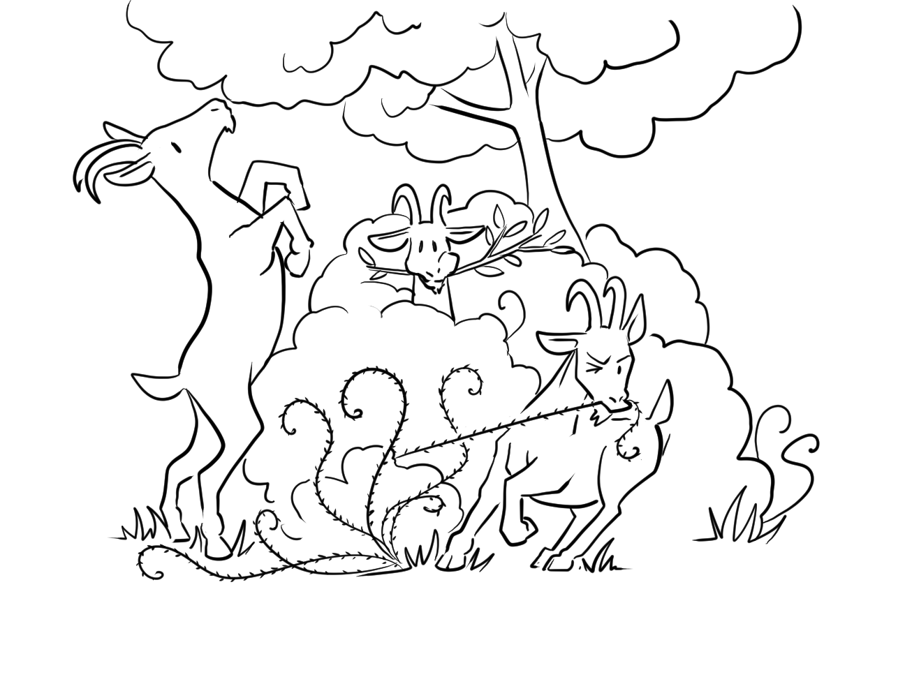
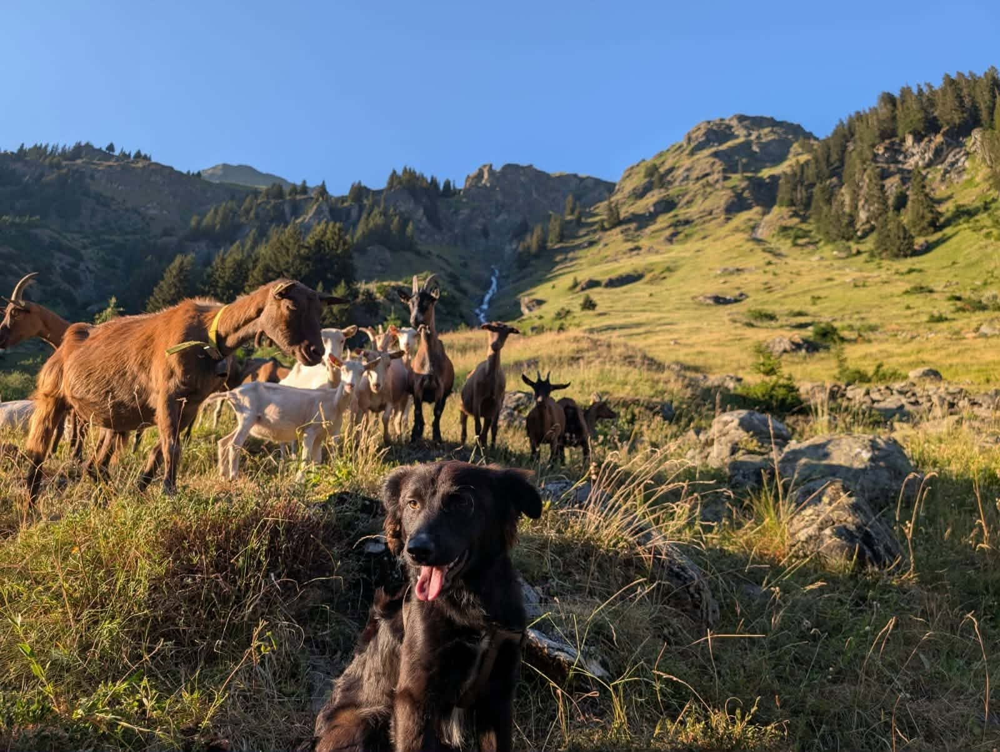
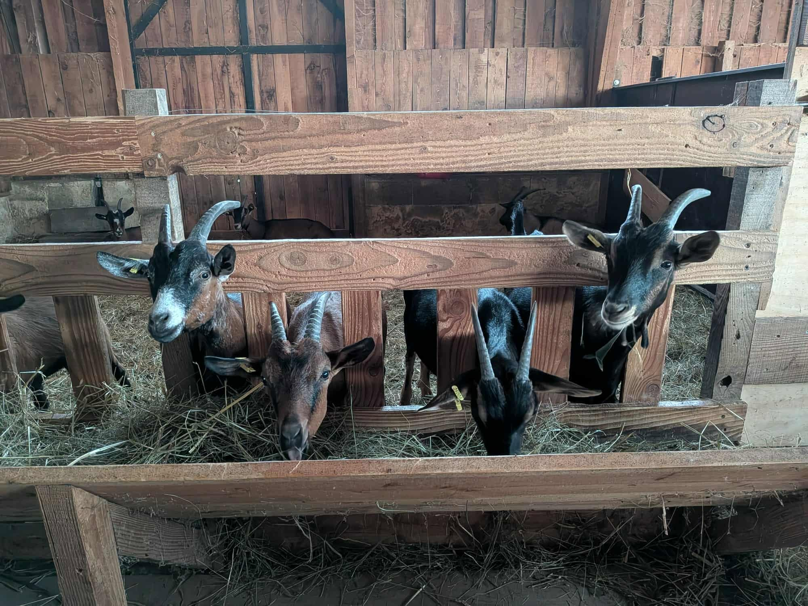
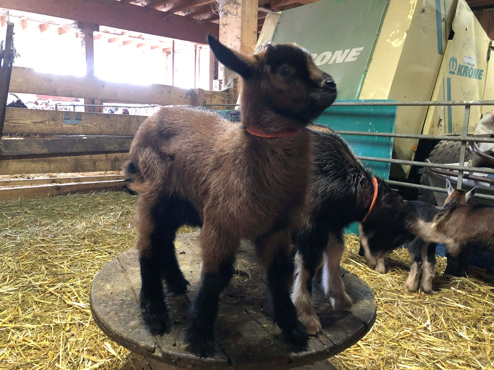

L'élevage caprin et le bien-être animal 🐐

Notre troupeau comptera environ 40 chèvres de race Alpine chamoisée. Après plusieurs années d'expérience avec cette race, nous l'avons choisie car elle est robuste, adaptable, et valorise bien sa nourriture tout en produisant de belles quantités de lait.
Le bien-être animal est central dans notre projet : nous maintenons une taille de troupeau raisonnable pour assurer un bon suivi de chaque biquette. Pour leurs soins, nous privilégierons des produits naturels comme les huiles essentielles et des préparations à base de plantes, tout en nous appuyant sur l'accompagnement de vétérinaires.
Une alimentation diversifiée et équilibrée 🌿

Les chèvres seront principalement menées dans des prairies pâturées et auront toujours accès à l'extérieur, sauf la nuit où elles resteront à l'abri dans la chèvrerie. Pour leur offrir une grande diversité alimentaire, elles auront également accès aux haies et pourront, à l'occasion, passer en milieu forestier.
En complément de ce qu'elles trouvent lors de leurs sorties, elles seront nourries avec les foins et légumineuses produits sur la ferme, ainsi qu'une sélection de céréales adaptées à leurs besoins du moment. Cette alimentation équilibrée garantira la production d'un lait de grande qualité.
Naissances, lactation et qualité de vie 🧀
Les mises bas auront lieu vers le mois de février, et nous garderons chaque année quelques chevrettes pour assurer la relève du troupeau. Les chèvres seront en lactation de mars à novembre, avec une prévision de production moyenne de 650 litres de lait par chèvre et par an.
Nous pratiquerons la monotraite, c'est-à-dire une seule traite par jour. Expérimenté après des années de double traite, ce choix s'est imposé pour libérer du temps en soirée, améliorer considérablement notre qualité de vie et mieux concilier le travail à la ferme avec notre vie personnelle.


